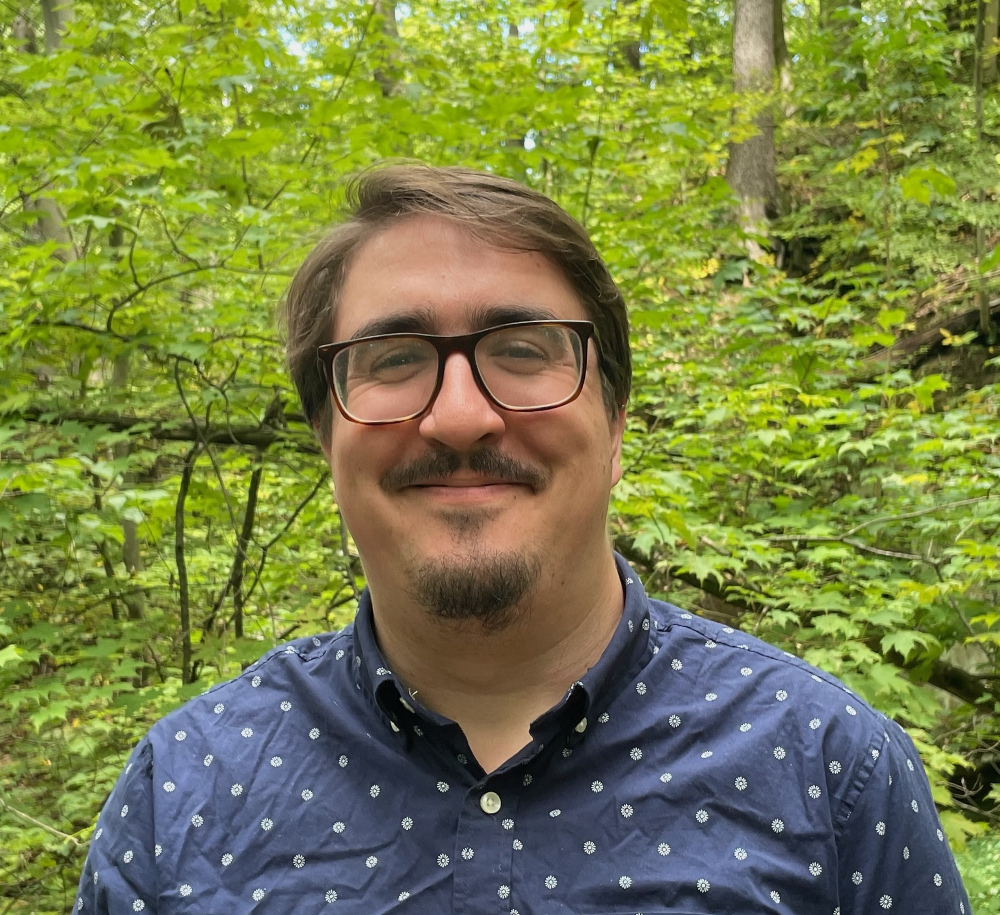

Matt Deutsch, Ph.D. Student
Hi, I’m Matthew Deutsch, a Ph.D. candidate in Materials Science at Kent State University in Kent Ohio. My research focuses on statistical physics and understanding the behavior of liquid crystals and soft matter using high performance computing. Using computational simulations, I am interested in how these materials behave and interact at a microscopic level, including how defects form and interact in liquid crystals, helping to unravel the fundamental physics behind their unique properties.Throughout my academic journey, I’ve been driven by a deep curiosity about the physics of materials and how we can harness their properties for new technologies. Through this website, I hope to share my research, publications, and interests with a broader audience.
I develop Monte Carlo, molecular dynamics, and finite element simulations, often utilizing high-performance computing resources. One of my key projects has been investigating how chirality—a property that distinguishes left- and right-handed molecules—can spontaneously emerge and evolve in liquid crystals. I am also interested in studying active matter systems to understand how they interact and self-organize in complex environments. Previous research focused on topological defects in liquid crystals and connecting liquid crystal theories to the defect generation theories in crystalline solids. Before my Ph.D., I conducted research on the degradation and efficiency of organic semiconductors, aiming to improve materials for next-generation solar cells and organic light-emitting diodes (OLEDs). I also explored hydrophobic surfaces using surface plasmon resonance and scanning electron microscopy as part of my undergraduate work.
Outside of research, I enjoy hiking, camping, and astrophotography.